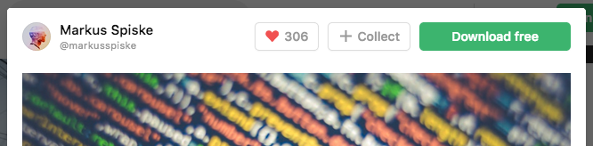

가장 중요한 문법인
태그를 배웠습니다.

지금까지
가장 중요한 문법인
태그를 배웠습니다.
이번 시간에는
태그의 심화된 문법인
속성(attribute)을 배우게 될 것입니다.
이것까지 배우면
HTML의 기본 문법을
완전히 마스터한 것이 됩니다.
한편
아주 인기있는 태그인
img 태그도 살펴보겠습니다.
우리가 만든 예제를 보면
글씨만 있다 보니까 좀 삭막해요.
이제 여러분은 무엇을 하고 싶나요?
본문에 이미지를 넣고 싶어졌을 거에요.
웹이 처음 등장했을 때는
본문에 이미지를 넣는 기능도 없었습니다.
웹페이지에
이미지를 처음으로 넣을 수 있게 되었을 때
사람들은 얼마나 행복했는지 상상해 보세요.
해봅시다.
이미지를 넣는 태그의 이름은 img입니다.
image의 줄임말이겠죠?
아래와 같이 코드를 작성해 봤습니다.
동작하지 않습니다. 왜요?
어떤 이미지를 불러올 지에 대한 정보가
부족하기 때문입니다.
태그를 만든 사람들은
태그 이름만으로는 정보가 부족하다는 것을 알게 되었습니다.
그래서 고민에 빠집니다.
그리고 새로운 문법을 도입하게 됩니다.
속성(attribute)
입니다.
속성을 적용해 봅시다.
img 태그에
source의 줄임말인 src를 붙여서
코드를 아래와 같이 만들어 보세요.
추가한 내용은 다음과 같습니다.
위의 코드에서
src가 바로 속성입니다.
또 속성의 값인
아래 주소는
이미지의 주소입니다.
https://s3-ap-northeast-2.amazonaws.com/opentutorials-user-file/module/3135/7648.png
src라는 속성을 통해서
이미지를 불러올 수 있게 된 것입니다.
위의 이미지는 인터넷에 있는 이미지입니다.
내 컴퓨터에 이미지가 없어도 표시할 수 있습니다.
그럼
내 컴퓨터에 있는
이미지를 표시하고 싶다면
어떻게 해야할까요?
우선 이미지 파일을 구해야겠죠?
웹브라우저에서 원하는 이미지를 찾은 다음에
이미지 위에서 오른쪽 클릭을 해서
원하는 위치에 이미지를 저장하시면 됩니다.

또는 아래와 같이 검색하시면
저작권에 구속받지 않고
자유롭게 사용할 수 있는
이미지를 구할 수 있는
여러 서비스가 있습니다.
unsplash.com도
그런 서비스 중의 하나입니다.
이 서비스를 이용해서
웹페이지에서 사용할 이미지를 다운받아 볼까요?
마음에 드는 사진을 선택하고
Download 버튼을 누르면
이미지를 컴퓨터에 저장할 수 있습니다.

다운로드 받은 이미지를
프로젝트 폴더에 위치시켜 보세요.

위와 같이
웹페이지 파일(1.html)과
같은 위치에 있는 이미지 파일(coding.jpg)이라면
src 속성의 값으로
이미지 파일의 이름만 적어주시면 됩니다.
<img src="coding.jpg">
이미지의 크기가 원하는 것과 다르면
어떻게 하면 될까요?
검색해서 알아내시면 됩니다.
검색결과 width라는
속성을 찾아낼 수 있었을 거에요.
width의 값으로
숫자나 %를 사용하면 원하는 크기로 조정할 수 있습니다.
변경사항
지금까지 살펴본 바와 같이
속성은
태그의 이름만으로는 정보가 부족할 때 사용됩니다.
속성이라는 문법이 추가되면서
이제 태그는 보다 풍부한 표현력을 갖게 되었습니다.

축하합니다.
여러분은 태그의 문법을 완벽하게 마스터했습니다.
더 복잡한 문법은 없습니다.
또한 HTML에서
인기가 매우 높은 태그인
img 태그도 살펴봤습니다.